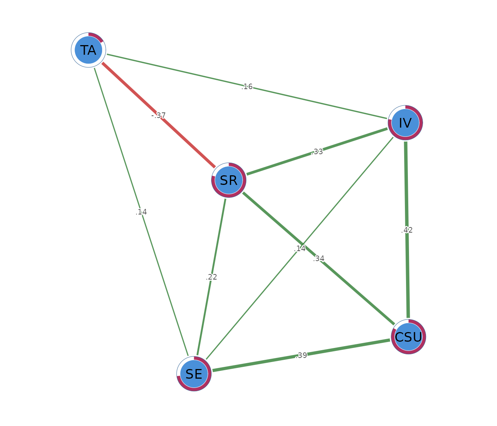

Stepwise Gaussian graphical model selection
Source:vignettes/ggm-model-selection.Rmd
ggm-model-selection.RmdWhat stepwise model selection does
A stepwise Gaussian graphical model estimates the conditional dependence structure among a set of continuous variables by combining model selection with maximum-likelihood estimation. As in all Gaussian graphical models, each edge represents a partial correlation between two variables after conditioning on all remaining variables in the network. An edge therefore indicates a conditional association that cannot be explained by the other measured variables, whereas the absence of an edge implies that the observed association is adequately accounted for by the remaining variables under the fitted model.
The network structure is determined through an iterative stepwise search in which candidate graphs are compared using an information criterion, typically the Extended Bayesian Information Criterion (EBIC). Edges are sequentially added or removed until no further improvement in the selection criterion is obtained. Unlike penalized estimators such as the graphical lasso, sparsity is achieved through explicit model selection rather than shrinkage of the precision matrix.
Following model selection, the precision matrix is re-estimated by maximum likelihood on the selected graph without regularization. Consequently, the retained edge weights are not biased toward zero by a penalty term and may be preferred when the objective is parameter estimation and interpretation of partial correlations within the selected network. This approach is particularly appropriate when sample size is sufficiently large relative to the number of variables, allowing reliable estimation without regularization.
When the sample size is moderate to large and the underlying network is not excessively dense, stepwise Gaussian graphical models often recover graph structures similar to those obtained using the EBIC graphical lasso, particularly when both methods employ the same information criterion for model selection. However, because the graphical lasso performs simultaneous estimation and regularization, whereas the stepwise approach separates model selection from parameter estimation, the two methods may differ in finite samples. The graphical lasso generally exhibits greater numerical stability in high-dimensional settings ((p n)) or when estimation is ill-conditioned, while the stepwise estimator avoids the shrinkage bias inherent to penalized estimation by refitting the selected model using unpenalized maximum likelihood.
The data
The worked example uses SRL_GPT, which contains 300
observations on five self-regulated learning constructs. Cognitive
strategy use (CSU), intrinsic value (IV),
self-efficacy (SE), self-regulation (SR), and
test anxiety (TA) are composite scores recorded on a 1 to 7
scale. Rows are observations and columns are network nodes.
head(SRL_GPT)
#> CSU IV SE SR TA
#> 1 5.307692 5.666667 5.777778 5.333333 4.00
#> 2 5.846154 6.444444 6.000000 5.777778 4.00
#> 3 6.615385 6.666667 6.222222 6.333333 3.25
#> 4 5.692308 6.555556 6.333333 5.555556 4.50
#> 5 4.384615 5.555556 4.888889 4.777778 4.00
#> 6 4.846154 5.444444 5.666667 5.111111 3.50The analysis treats these composite scores as continuous. Before applying the same workflow to another data set, the analyst should inspect missingness, distributions, unusual observations, and the measurement scale. The present data are complete, so every pairwise correlation uses all 300 observations.
Fitting the network with psychnet()
psychnet() estimates the stepwise Gaussian graphical
model when method = "ggm". It returns a fitted
psychnet object containing the selected network and the
quantities needed for subsequent analysis. The default
uses the ordinary Bayesian information criterion, and the default
stepwise search considers single-edge additions and removals.
stepwise_net <- psychnet(data = SRL_GPT, method = "ggm")
stepwise_net
#> <psychnet> ggm network
#> nodes: 5 edges: 9 (undirected)
#> optimality (KKT residual): 6.66e-16The fitted network contains 5 nodes and 9 edges. One of the 10 possible pairs is removed. The printed KKT residual is , which will be interpreted in the numerical check below.
Inspecting the selected edges with summary()
summary() prints the fitted model and returns its edge
table invisibly. The table contains from, to,
and weight. Each weight is an unshrunk partial correlation
estimated under the selected network structure.
summary(stepwise_net)
#> <psychnet> ggm network
#> nodes: 5 edges: 9 (undirected)
#> optimality (KKT residual): 6.66e-16
#> edge weight: range [-0.370, 0.422], mean 0.196The retained weights range from -0.370 to 0.422. The largest positive
edge joins CSU and IV
().
Cognitive strategy use and intrinsic value remain positively related
above and beyond self-efficacy, self-regulation, and test anxiety.
The SR-TA edge is negative
().
Higher self-regulation is associated with lower test anxiety after the
other learning constructs have been accounted for. The model removes the
CSU-TA edge. This result means that the
selected structure does not retain a unique conditional association
between cognitive strategy use and test anxiety. It does not imply that
their ordinary correlation must be zero.
The IV-TA and
SE-TA edges are positive but modest, at 0.157
and 0.137. Their magnitudes warrant cautious interpretation. Every edge
is an adjusted association, so the network alone provides no direction
of causation.
Checking the fitted solution with certificate()
certificate() reports whether the fitted precision
matrix satisfies the conditions that define the maximum-likelihood
estimate for the selected graph. It returns the columns
method, certificate, kind, and
certified. For this model, certificate is the
largest numerical discrepancy across the defining conditions, and
certified compares that value with a default tolerance of
.
certificate(stepwise_net)
#> method certificate kind certified
#> 1 ggm 6.661338e-16 kkt TRUEThe residual is
and certified is TRUE. This value is at the
order of machine precision. It indicates that the final precision matrix
satisfies the selected model’s numerical conditions to numerical
precision. The certificate checks computation. It does not evaluate
sampling uncertainty, measurement quality, model assumptions, or causal
interpretation.
Comparing the selected model with the graphical lasso
psychnet() estimates the graphical lasso when
method = "glasso". Fitting it to the same data provides a
useful comparison because both methods estimate partial-correlation
networks, but they select and estimate edges differently.
glasso_net <- psychnet(data = SRL_GPT, method = "glasso")
glasso_net
#> <psychnet> glasso network
#> nodes: 5 edges: 10 (undirected)
#> lambda: 0.00861 gamma: 0.5
#> optimality (KKT residual): 2.21e-10
summary(glasso_net)
#> <psychnet> glasso network
#> nodes: 5 edges: 10 (undirected)
#> lambda: 0.00861 gamma: 0.5
#> optimality (KKT residual): 2.21e-10
#> edge weight: range [-0.350, 0.412], mean 0.174The graphical lasso retains all 10 possible edges, including a weak
CSU-TA edge of 0.049. The stepwise model
removes that edge and retains 9. For shared edges, the stepwise
estimates are often slightly larger in absolute magnitude because its
final refit applies no shrinkage. The CSU-IV
edge is 0.422 in the stepwise model and 0.412 in the graphical lasso.
The SR-TA edge is -0.370 in the stepwise model
and -0.350 in the graphical lasso.
This comparison does not identify a universally preferable model. The stepwise model reports unshrunk partial correlations for a selected structure. The graphical lasso estimates all retained weights under an penalty. The research aim and the planned approach to validation should guide the choice.
Describing node position with net_centralities()
net_centralities() computes node-level summaries from
the fitted graph. The default output contains node,
strength, and expected_influence. Strength is
the sum of absolute edge weights. Expected influence is the signed sum,
so negative associations offset positive associations.
net_centralities(stepwise_net)
#> node strength expected_influence
#> 1 CSU 1.1523235 1.15232352
#> 2 IV 1.0531117 1.05311170
#> 3 SE 0.8880693 0.88806926
#> 4 SR 1.2592340 0.51929333
#> 5 TA 0.6633854 -0.07655525Self-regulation has the largest strength (1.259), followed by cognitive strategy use (1.152). Self-regulation has expected influence 0.519 because its negative edge with test anxiety offsets its positive edges with the learning constructs. Cognitive strategy use has strength and expected influence of 1.152 because all of its retained edges are positive.
Test anxiety has the smallest strength (0.663) and a slightly negative expected influence (-0.077). These values describe its position in the estimated network. They do not show that self-regulation is an intervention target or that changing one node would cause changes in its neighbours.
Quantifying node predictability with net_predict()
net_predict() computes how much of each node’s variance
is accounted for by the remaining nodes. For a Gaussian graphical model,
it returns a tidy table with node, type,
metric, predictability, and
accuracy. Continuous nodes use the
metric, while accuracy is NA because
classification accuracy does not apply.
net_predict(stepwise_net)
#> node type metric predictability accuracy
#> 1 CSU gaussian R2 0.8327378 NA
#> 2 IV gaussian R2 0.7831430 NA
#> 3 SE gaussian R2 0.7279821 NA
#> 4 SR gaussian R2 0.7920188 NA
#> 5 TA gaussian R2 0.1656566 NACognitive strategy use has the highest predictability (). Intrinsic value (), self-regulation (), and self-efficacy () are also strongly accounted for by the remaining constructs. Test anxiety has the lowest predictability (), so most of its variance is not accounted for by this five-node model.
These values describe in-sample explained variance. Out-of-sample prediction requires a separate validation sample or a resampling design that evaluates performance on observations excluded from model fitting.
Visualizing the network with cograph::splot()
cograph::splot() draws the fitted network when the
optional cograph package is available. Psychological
styling uses green for positive edges and red for negative edges. The
predictability ring is requested explicitly for this model.
cograph::splot(stepwise_net, psych_styling = TRUE, predictability = TRUE)
The figure summarizes the signs and relative magnitudes of the retained edges. Node placement comes from a layout algorithm and has no measurement scale. Interpretation should therefore use the printed edge and node tables as the primary numerical results.
Sensitivity to rank correlations
psychnet() accepts cor_method = "spearman"
for a rank-based sensitivity analysis. This analysis asks whether the
main structure persists when estimation depends on monotonic ranks and
is less sensitive to extreme values.
spearman_net <- psychnet(data = SRL_GPT, method = "ggm", cor_method = "spearman")
spearman_net
#> <psychnet> ggm network
#> nodes: 5 edges: 7 (undirected)
#> optimality (KKT residual): 1.11e-15
summary(spearman_net)
#> <psychnet> ggm network
#> nodes: 5 edges: 7 (undirected)
#> optimality (KKT residual): 1.11e-15
#> edge weight: range [-0.266, 0.483], mean 0.245The Spearman model contains 7 edges, compared with 9 in the Pearson
model. The positive CSU-IV,
CSU-SE, CSU-SR,
IV-SR, and SE-SR
edges remain, as does the negative SR-TA edge.
The IV-SE and SE-TA
edges are removed. The main positive learning cluster and negative
self-regulation to test-anxiety relation persist, while several weaker
connections depend on the correlation estimator.
certificate(spearman_net)
#> method certificate kind certified
#> 1 ggm 1.110223e-15 kkt TRUEThe Spearman fit has a residual of and is certified. Its numerical solution therefore satisfies the selected graph’s defining conditions to numerical precision.
Reporting the analysis
A report should state the variables, sample size, correlation estimator, missing-data procedure, selection criterion, value of , and whether the stepwise refinement was used. The edge table should be reported numerically. Interpretation should distinguish partial correlations from ordinary correlations and from causal effects.
The present analysis used Pearson correlations, ordinary BIC
(),
and the default single-edge stepwise refinement on 300 complete
observations. The selected network contained 9 edges. The largest
positive edge was CSU-IV
(),
and the negative SR-TA edge was -0.370. The
maximum-likelihood refit had a KKT residual of
.
A Spearman sensitivity model retained the main pattern but selected 7
edges.
How stepwise selection works
The fitting procedure begins by generating candidate network structures across a graphical-lasso penalty path. At this stage, the path is a practical way to produce networks ranging from sparse to dense. Each distinct edge pattern is a candidate structure.
Every candidate structure is then refitted by unregularized maximum likelihood. The Bayesian information criterion scores the tradeoff between fit and the number of edges. The candidate with the smallest score becomes the starting network for a local stepwise refinement. The refinement tests single-edge additions and removals, retaining a change whenever it improves the criterion. It stops when no single-edge change improves the score.
The resulting graph is a local optimum among the one-edge alternatives examined by the search. A different correlation estimator or model-selection setting can lead to a different structure, as the Spearman analysis showed. The selected network should therefore be treated as an estimated model whose stability needs evaluation in a full study.
Mathematical foundations
This section states the model and selection criterion precisely. It can be skipped when the practical workflow is the main interest.
Gaussian graphical model
Let follow a multivariate normal distribution with covariance matrix and precision matrix . For ,
The reported partial correlation is
Information criterion
For a candidate graph with edges, sample size , and nodes, the extended Bayesian information criterion is
The default removes the final term and yields ordinary BIC. The selected graph is the candidate with the smallest criterion value, followed by the single-edge refinement.
Constrained maximum-likelihood certificate
Let
be the sample correlation matrix and
be the covariance matrix implied by the fitted precision matrix. For
every retained edge and every diagonal entry, the constrained optimum
satisfies the corresponding covariance equality between
and
.
Precision entries outside the selected graph are zero.
certificate() reports the maximum absolute violation across
these conditions. A value near machine precision indicates that the
constrained fit satisfies them to numerical precision.
Predictability
For node , the conditional residual variance is . Its explained variance is
where
is the marginal variance. net_predict() evaluates this
identity for each node in the selected Gaussian graphical model.